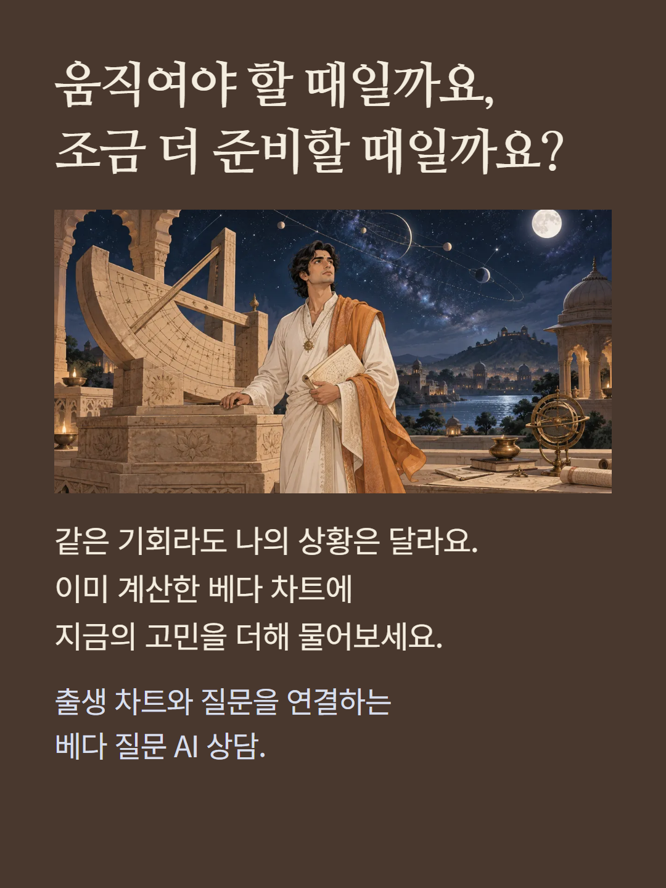
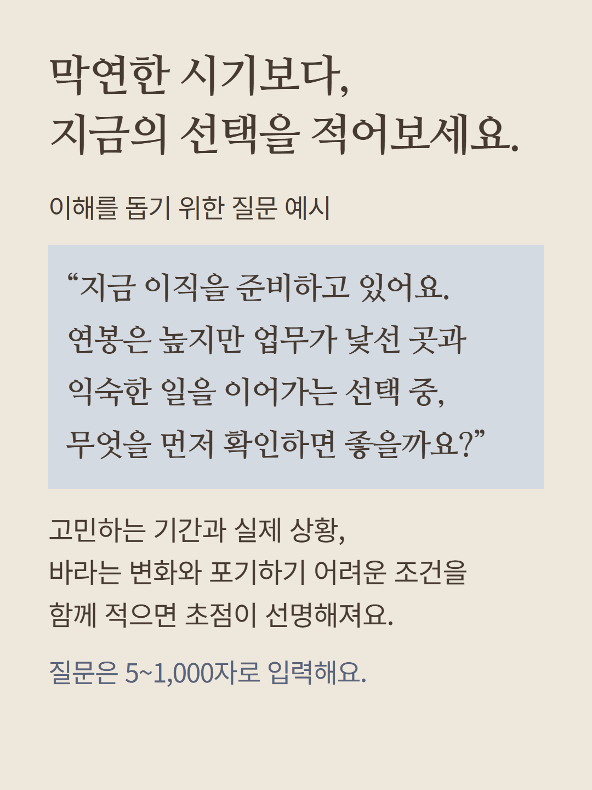
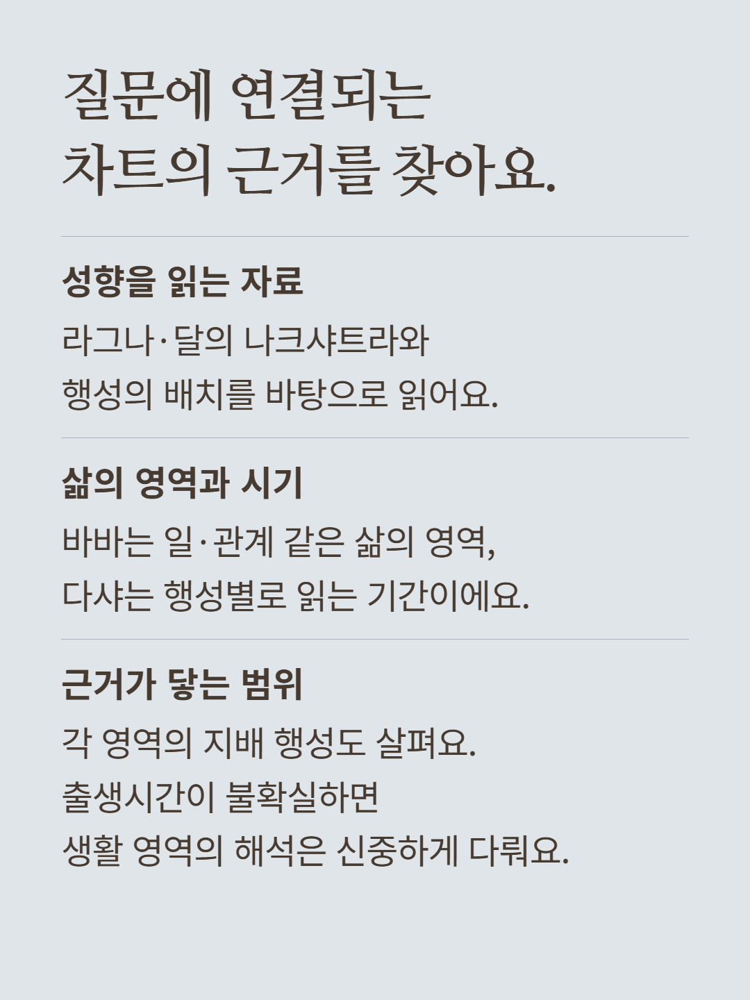
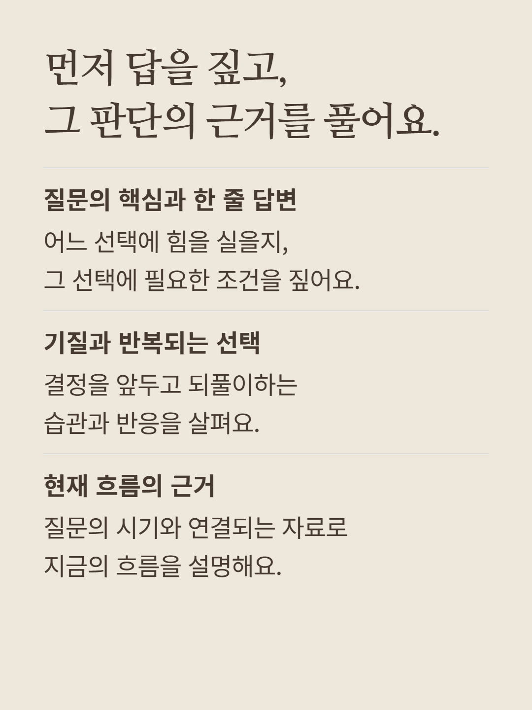
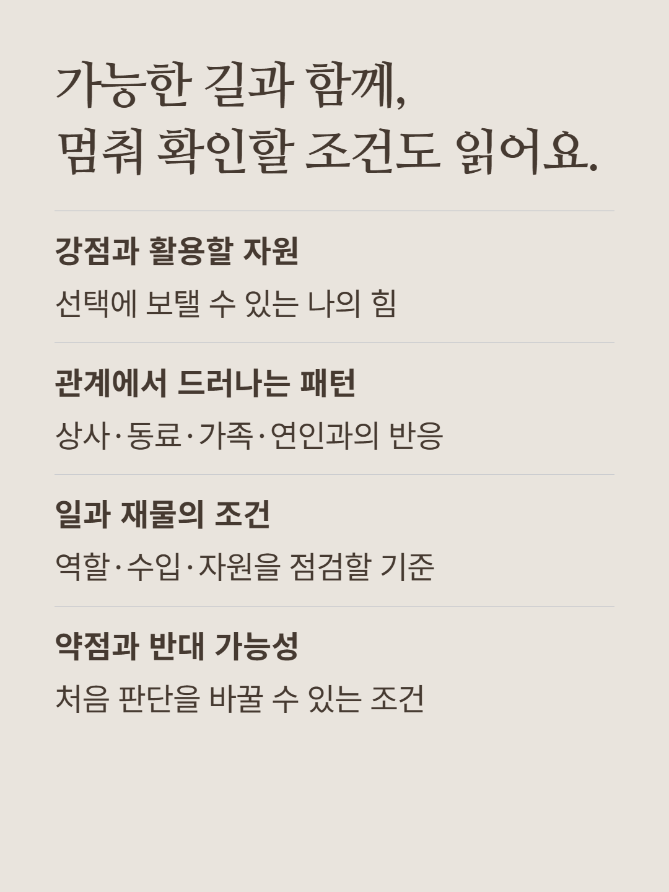
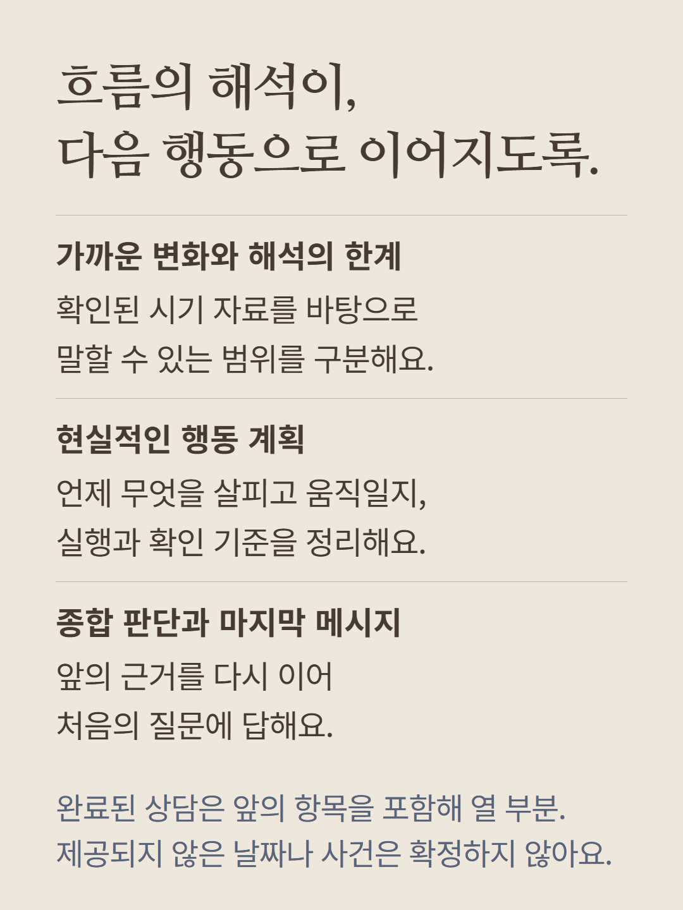
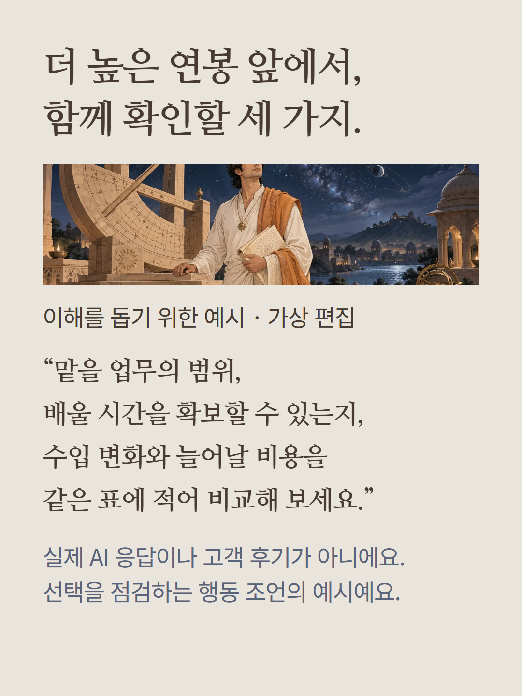
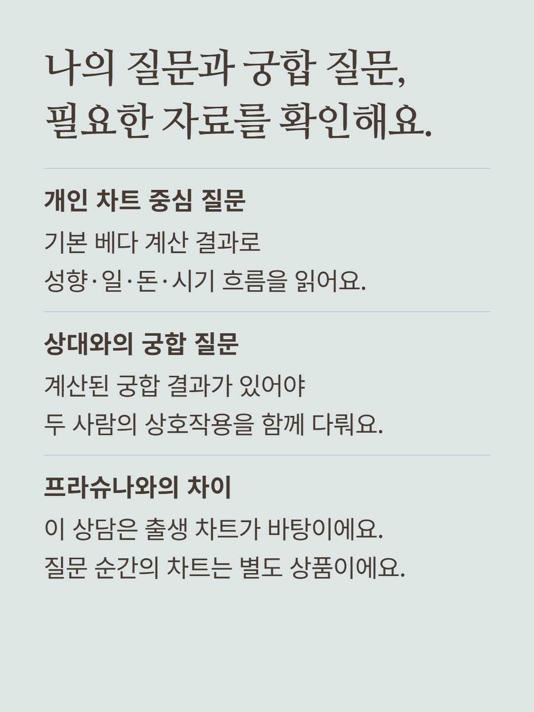
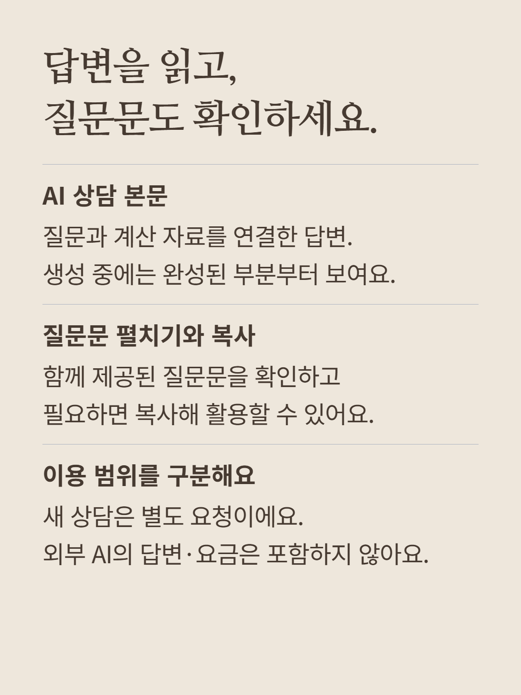
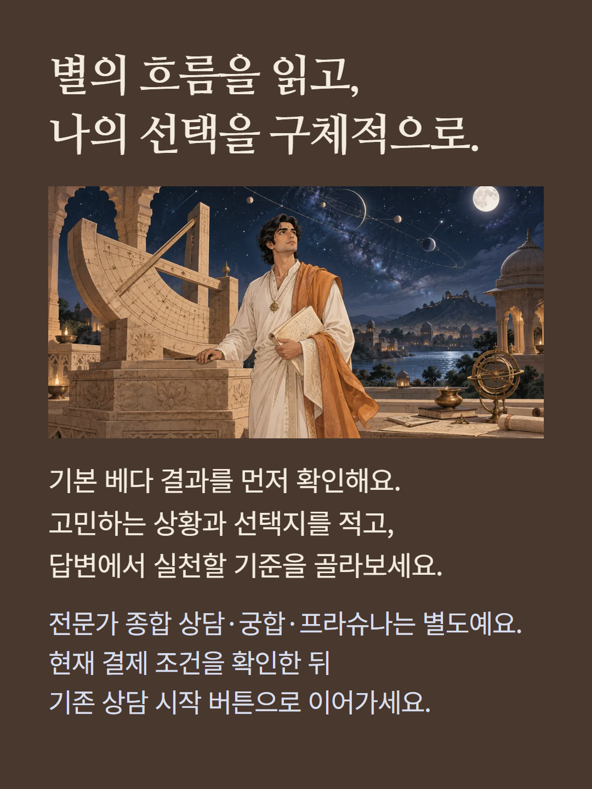

이미 계산된 베다 출생 차트와 5~1,000자의 질문을 바탕으로 AI가 해설하는 상담입니다. 라그나·나크샤트라·행성·바바와 지배 행성·다샤 등 제공된 자료를 사용하며, 출생시간이 불확실하면 바바 해석을 신중하게 다룹니다. 궁합 질문에는 계산된 상대 궁합 자료가 필요합니다. 완료된 답변은 질문의 핵심, 기질, 현재 근거, 강점, 관계 패턴, 일과 재물의 조건, 약점과 반대 가능성, 가까운 변화와 시기 해석의 한계, 행동 계획, 종합 판단의 열 부분으로 구성됩니다. 생성 중에는 완성된 부분부터 표시될 수 있습니다. 상담에 쓰인 질문문은 펼쳐 확인하고 복사할 수 있으나 외부 AI 답변과 이용 요금은 포함하지 않습니다. 새 상담은 별도 요청이며 무제한 후속 대화를 뜻하지 않습니다. 기본 해석·전문가 종합 상담·궁합 분석·질문 순간을 계산하는 프라슈나는 별도 상품입니다. 자료에 없는 날짜·사건·타인의 마음을 확정하는 결과가 아닙니다. 예시는 이해를 돕기 위한 가상 편집이며 실제 AI 응답이나 고객 후기가 아닙니다. 현재 결제 조건을 확인해 주세요.